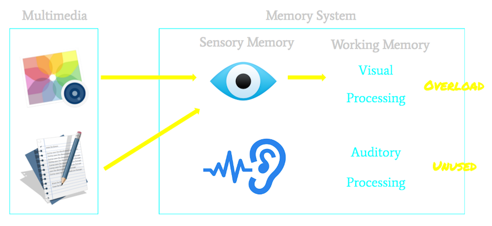

"The modality effect refers to a cognitive load learning effect that occurs when a mixed-mode (partly visual and partly auditory) presentation of information is more effective than a single-mode (either visual or auditory alone) presentation of the same information...It occurs when multiple sources of information that must be mentally integrated before they can be understood result in superior learning using spoken (and therefore auditory) information rather than written (and therefore visual) information."
Both visualising and reading are visual tasks, it is possible that performing both tasks resulted in the overload of the visual memory store.

Imagine these infographics are presented with spoken statement!
Eliminating one visual task, reading, by presenting the material in an
auditory mode enabled processing to occur in the two separate stores.
The use of the two stores increased effective working memory capacity
and enhanced recall.
According to the modality principle, students learn better when the
associated statements are narrated rather than presented visually.